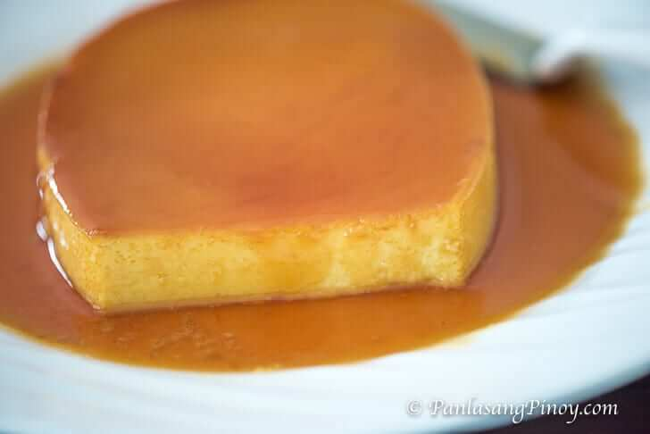

Leche Flan Recipe

Description
Leche flan is a Filipino dessert that is essentially a caramel custard
consisting of milk, sugar, and eggs, with the addition of vanilla flavoring.
Originally, it was brought over to the Philippines during the Spanish colonization,
so it is believed that it has origins in the regions on the border of Spain and France.
Ingredients
- 10 pieces eggs
- 1 can condensed milk (14 oz)
- 1 cup granulated sugar
- 1 teaspoon vanilla extract
Steps
- Using all the eggs, separate the yolk from the egg white (only egg yolks will be used).
- Place the egg yolks in a big bowl then beat them using a fork or an egg beater.
- Add the condensed milk and mix thoroughly.
- Pour-in the fresh milk and vanilla. Mix well.
- Put the mold (llanera) on top of the stove and heat using low fire.
- Put-in the granulated sugar on the mold and mix thoroughly until the solid sugar turns into liquid (caramel) having a ligjt brown color. Note: If you can't find a Llanera mold, you can use individual Round Pans.
- Spread the caramel (liquid sugar) evenly on the flat side of the mold.
- Wait for 5 minutes then pour the egg yolk and milk mixture on the mold.
- Cover the top of the mold using an Aluminum foil.
- Steam the mold with egg and milk mixture for 30 to 35 minutes.
- After streaming, let the temperature cool down the refrigerate.
- Serve for dessert. Share and Enjoy!
Back to homepage